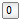

Library of basic input/output control blocks (continuous, discrete, logical, table blocks)
This library contains input/output blocks to build up block diagrams.
Copyright © 1998-2015, Modelica Association and DLR.
This Modelica package is free software and the use is completely at your own risk; it can be redistributed and/or modified under the terms of the Modelica License 2. For license conditions (including the disclaimer of warranty) see Modelica.UsersGuide.ModelicaLicense2 or visit https://www.modelica.org/licenses/ModelicaLicense2.
Extends from Modelica.Icons.Package (Icon for standard packages).
| Name | Description |
|---|---|
| Library of examples to demonstrate the usage of package Blocks | |
| Continuous | Library of continuous control blocks with internal states |
| Discrete | Library of discrete input/output blocks with fixed sample period |
|  Interaction | Library of user interaction blocks to input and to show variables in a diagram animation |
| Library of connectors and partial models for input/output blocks | |
| Library of components with Boolean input and output signals | |
| Library of Real mathematical functions as input/output blocks | |
| MathInteger | Library of Integer mathematical functions as input/output blocks |
| MathBoolean | Library of Boolean mathematical functions as input/output blocks |
| Nonlinear | Library of discontinuous or non-differentiable algebraic control blocks |
| Routing | Library of blocks to combine and extract signals |
| Library of signal source blocks generating Real and Boolean signals | |
| Tables | Library of blocks to interpolate in one and two-dimensional tables |
| Types | Library of constants and types with choices, especially to build menus |
| Icons for Blocks |